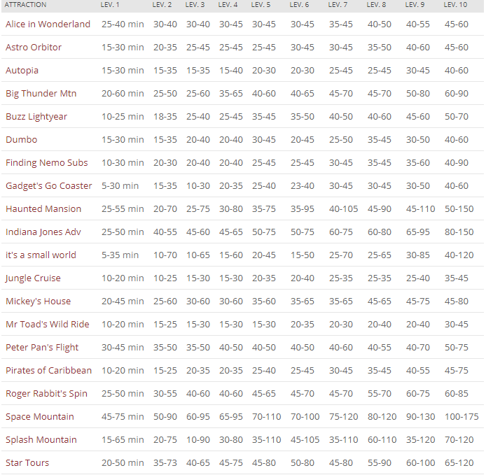
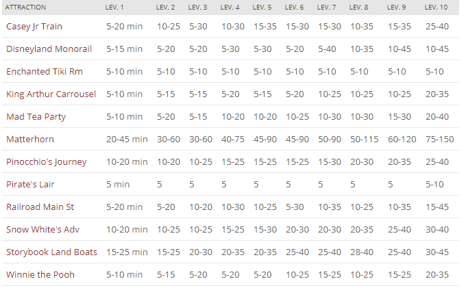

If you ever want to go to an amusement park. You have a budget to get through the day and not go over. You also check to see if there's specials for that park. If we compare the prices for general admission for all the parks:
| Park Name | Prices (General Admission) |
|---|---|
| DisneyLand | $117 |
| Disneyland California Adventure | $117 |
| Six Flags | $84.99 |
| Universal Studios | $109 | Knott's Berry Farm | $82 |
It shows that the highest price out of all parks is Disneyland. Not a good choice because this is normal prices on a regular day. Now if we compare the lowest prices to its peak:
| Park Name | Lowest point | Peak |
|---|---|---|
| DisneyLand | $97 | $135 |
| Disneyland California Adventure | $97 | $135 |
| Six Flags | $53.99(Online) | $89.99 |
| Universal Studios | $109 | $124 | Knott's Berry Farm | $48(Online) | $82 |
It still shows Disney is the most expensive out of all.
Not only that, but the waiting time for the rides on average, if we add up all the rides. It comes out to be 81.08 minutes in line. Below are the rides listed on average (Focus on Level 5):
 Finally, it's not only the rides that have long lines. It's the food as well, Over priced water bottles and food all over the park. Than again, there's some good to the bad. Click the Pro & Counter arguments page to see.